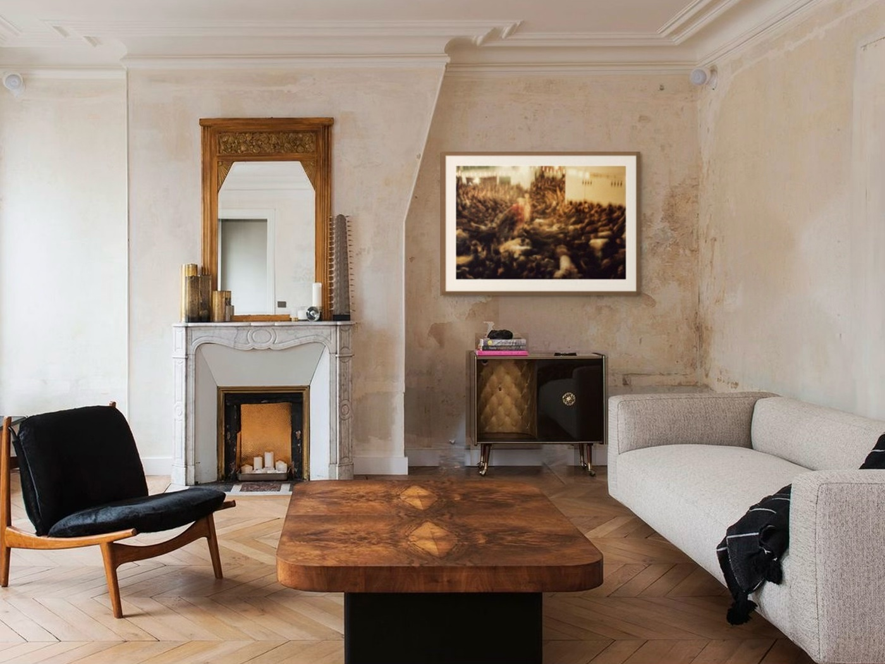
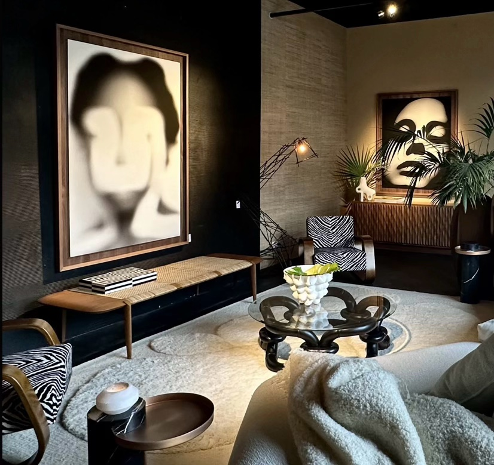

Art Sourcing & Advisory
We work with private collectors, interior designers, architects, and commercial clients to source and curate contemporary photography for their spaces.
Our curatorial practice extends beyond the artists we represent. Drawing on ongoing research and international artist relationships, we identify distinctive works that respond to the character, creative vision, and requirements of each project.
From individual artworks to wider collections, we offer a personalised approach, guiding clients through artwork selection, production, and framing.
Working with elsewhere.
-
Collection access
Discover works from our curated collection.
-
Sourcing & curation
Photography sourced and selected for your space and vision.
-
Production & framing
Advice on sizing, printing, and framing.
-
Delivery & installation
Coordination of delivery and installation as required.
Have a project in mind?
Whether you’re looking for an individual artwork or sourcing photography for a larger project, we’d love to hear from you.

